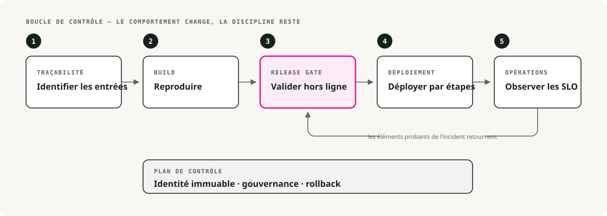
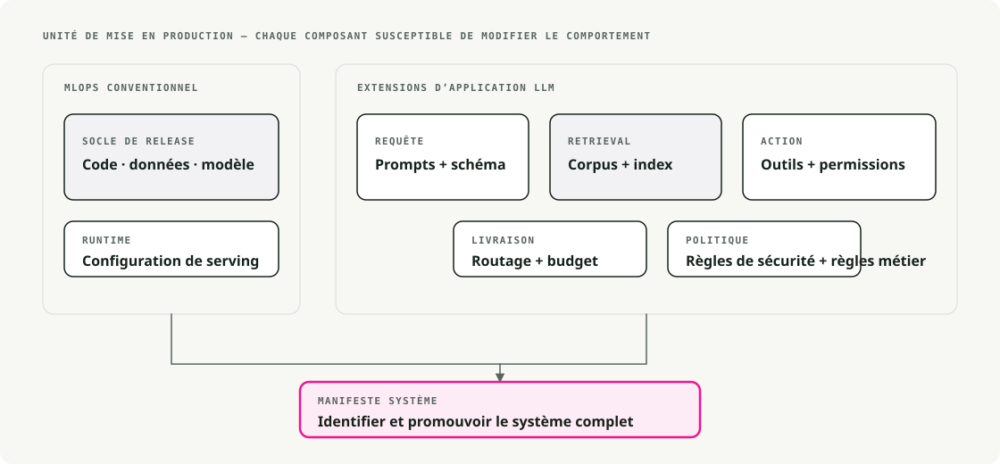
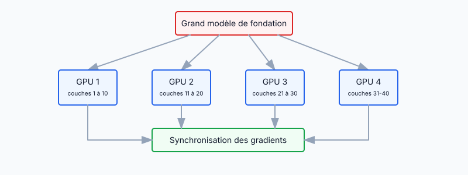
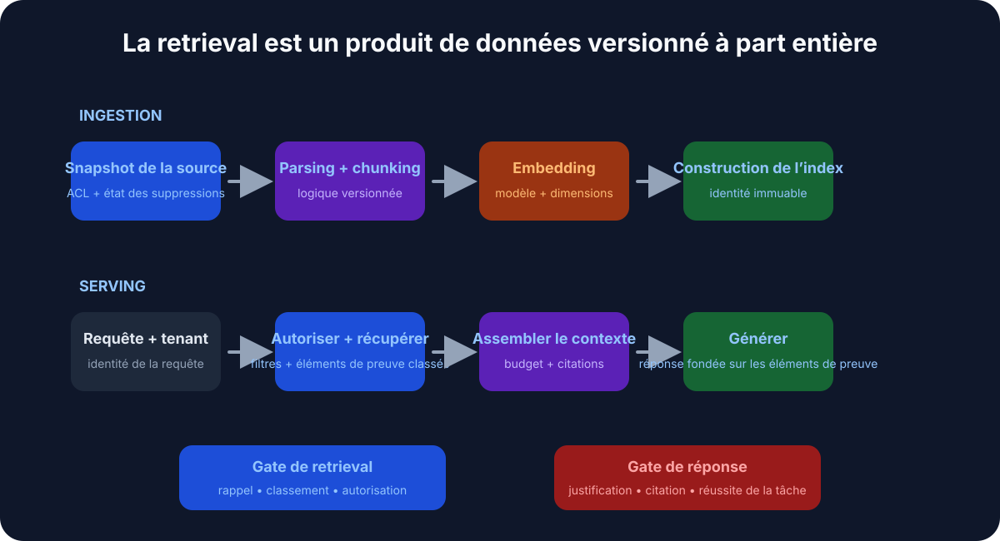
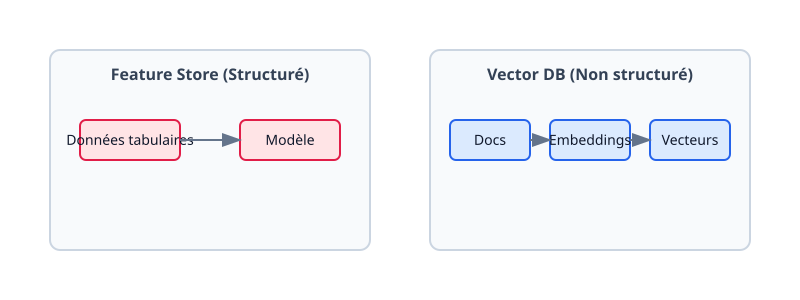
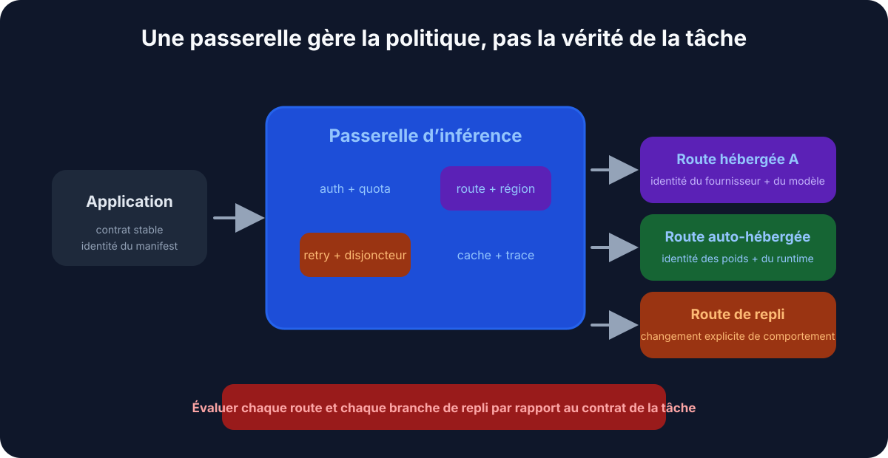
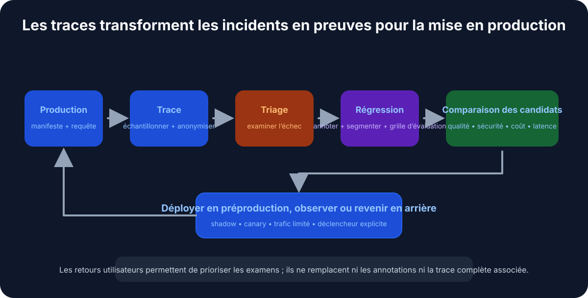

Traduction automatique
Cet article a été traduit automatiquement depuis la version originale en anglais.
MLOps vs LLMOps : l’infrastructure pour les modèles de fondation et les systèmes LLM
Les modèles de fondation ont fait voler en éclats la plupart des hypothèses sur lesquelles reposait le MLOps classique. Voici un tour d’horizon de ce qui a changé, de ce qui est resté, et des patterns qui ont comblé l’écart.
Le MLOps classique avant les modèles de fondation
Il y a quelques années, le MLOps signifiait surtout du DevOps pour le ML — automatiser le cycle de vie, de la préparation des données au déploiement puis au monitoring. Les modèles étaient suffisamment petits pour être entraînés from scratch sur des données métier, et l’infrastructure reflétait cette réalité.

1.1. Pipelines de bout en bout
Les équipes construisaient des pipelines pour l’extraction des données, l’entraînement, la validation et le déploiement. Airflow gérait l’ETL et l’orchestration de l’entraînement. La CI/CD exécutait les tests et poussait les modèles en production. Les modèles étaient livrés sous forme de conteneurs Docker exposant des endpoints REST ou des batch jobs. L’objectif de tout cela était la reproductibilité et l’automatisation.
1.2. Suivi des expériences et versioning des modèles
MLflow et Weights & Biases étaient les standards pour journaliser les runs, les hyperparamètres et les métriques. Les data scientists pouvaient comparer les expériences et reproduire les résultats de manière fiable. Les registres de modèles fournissaient des numéros de version, ce qui rendait les rollbacks simples quand un nouveau modèle sous-performait.
1.3. Entraînement continu et CI/CD
Les pipelines étaient conçus autour de l’intégration continue de nouvelles données. Une configuration typique réentraînait chaque nuit ou chaque semaine à mesure que les données arrivaient, exécutait une batterie de tests, puis déployait automatiquement si tout passait. Jenkins et GitLab CI/CD garantissaient qu’un changement dans les données ou le code déclenchait le pipeline de façon fiable.
1.4. Infrastructure et serving
Le serving avait une empreinte relativement faible — quelques cœurs CPU ou un seul GPU pour l’inférence temps réel. Kubernetes et Docker étaient les choix par défaut pour des services d’inférence scalables. Le monitoring couvrait trois sujets : les métriques de performance (latence, débit, mémoire), les métriques du modèle (accuracy, drift) et la santé du système (uptime, taux d’erreur).
1.5. Feature stores et gestion des données
Dans la finance et l’e-commerce, les features construites à la main comptaient autant que le modèle. Les feature stores offraient un endroit central pour les gérer et maintenaient la cohérence entre entraînement et serving. Les données structurées et le feature engineering constituaient le centre de gravité. Les données non structurées — texte, images — étaient traitées séparément, en dehors de ces stores.
Cette configuration a bien fonctionné jusqu’à ce que les modèles deviennent beaucoup plus gros.
2. Changement de paradigme : l’essor des modèles de fondation à grande échelle
Autour de 2018–2020, le paysage a changé rapidement. Les chercheurs ont commencé à publier des modèles de fondation — de très grands modèles préentraînés sur de larges corpus et adaptables à de nombreuses tâches.
La progression a été rapide :
- 2018–2019 : BERT et GPT-2 ont rendu crédible le transfer learning à grande échelle.
- 2020–2021 : GPT-3 et PaLM ont montré ce que l’échelle brute permettait.
- 2021–2023 : des modèles d’image comme DALL-E et Stable Diffusion ont fait entrer l’IA générative dans le grand public.
- 2023–2024 : les modèles de fondation sont devenus une infrastructure par défaut — disponibles sur Hugging Face, AWS Bedrock, Vertex AI Model Garden, et directement chez les fournisseurs d’API.

Voici ce que les modèles de fondation ont réellement changé dans l’infrastructure ML.
2.1. Le préentraîné bat le from scratch
Au lieu d’entraîner from scratch, les équipes sont parties d’un modèle préentraîné puis l’ont fine-tuné pour la tâche visée. Le temps d’entraînement est passé de plusieurs semaines à quelques heures. Les besoins en données sont passés de millions d’exemples à quelques milliers. De petites équipes ont pu livrer de vrais produits IA sans organisation de recherche derrière elles.
Les plus grands modèles (des milliards de paramètres) sont généralement utilisés tels quels via des API, ou fine-tunés avec des adapters légers. La fiche de poste a changé : moins de « comment construire un modèle ? » et davantage de « comment l’utiliser et l’intégrer ? »
2.2. Taille des modèles et exigences de calcul
À l’échelle des LLM, le reste de la stack doit changer aussi. Un modèle de 175B de paramètres n’est pas juste un 50M en plus gros — il ne tient pas sur le même matériel, ne s’entraîne pas de la même façon, et ne se sert pas de la même manière.
Les points douloureux :
- L’entraînement demande du matériel puissant (GPUs, TPUs) et du calcul distribué.
- Le model parallelism répartit un seul modèle sur plusieurs GPUs.
- Le data parallelism synchronise de nombreux workers GPU pendant l’entraînement.
- L’inférence nécessite souvent plusieurs GPUs ou des runtimes spécialisés pour maintenir une latence acceptable.
DeepSpeed et ZeRO (Zero Redundancy Optimizer) sont apparus précisément pour rendre l’entraînement de modèles énormes praticable. Les exigences d’infrastructure ont bondi de plusieurs ordres de grandeur.
2.3. L’émergence du LLMOps
Faire tourner ces modèles en production a nécessité des extensions au MLOps classique. C’est ce qui a donné LLMOps — un MLOps spécialisé pour les grands modèles, avec les mêmes principes mais une surface de problèmes différente :
- Compute : gérer des clusters GPU coûteux, pas des pools CPU.
- Prompt engineering : façonner le comportement par la conception des entrées.
- Monitoring de la sécurité : détecter les biais, les contenus nocifs et les fuites de données.
- Gestion de la performance : arbitrer entre latence, qualité et coût par token.
Des problèmes presque invisibles sur les petits modèles — texte biaisé, données d’entraînement divulguées — sont devenus de vrais risques à l’échelle des LLM.

Le schéma de NVIDIA montre bien comment ces spécialités s’imbriquent : le MLOps classique à l’extérieur, puis les GenAI Ops (tout modèle génératif), puis les LLMOps (spécifiquement les grands modèles de langage), puis les RAGOps pour les systèmes augmentés par retrieval. Le point clé de cette imbrication est que chaque couche interne s’appuie sur les pratiques des couches externes — elle ne les remplace pas.
2.4. Les modèles de fondation en tant que service
Autre grand changement : beaucoup d’applications n’hébergent plus leurs propres modèles, elles appellent ceux de quelqu’un d’autre. OpenAI, Cohere et AI21 Labs proposent des LLM hébergés. Google Vertex AI fournit un Model Garden de modèles préentraînés. AWS Bedrock héberge des modèles de fondation propriétaires. Hugging Face héberge des milliers de poids open source que vous pouvez récupérer ou exécuter dans le cloud.
Cela réorganise l’architecture. Les pipelines de production appellent des API externes pour l’inférence, ce qui évite de gérer les GPUs mais introduit de nouveaux coûts :
- Latence : les allers-retours réseau ajoutent de l’overhead.
- Coût : une tarification au token fait que les pics d’usage se répercutent directement sur la facture.
- Confidentialité des données : tout ce qui est envoyé à un fournisseur sort de votre périmètre.
- Dépendance fournisseur : le comportement de l’API, les prix et les politiques ne sont pas sous votre contrôle.
Ce compromis fonctionne pour la plupart des équipes. Gérer sa propre stack de serving LLM est un vrai investissement d’ingénierie, et pas toujours celui que l’on veut faire.
3. Nouvelles exigences et capacités dans l’infrastructure ML moderne
L’infrastructure ML moderne doit supporter des choses qui étaient de niche ou inexistantes il y a quelques années. Celles qui reviennent le plus souvent :
3.1. Entraînement distribué et model parallelism
Entraîner un modèle à un milliard de paramètres dépasse les capacités d’une seule machine. L’infrastructure moderne orchestre l’entraînement sur de nombreux nœuds :

Deux modes de partitionnement comptent surtout :
- Model parallelism : répartir les couches du modèle entre GPUs (chaque GPU exécute une partie de la forward pass).
- Data parallelism : répliquer le modèle sur plusieurs GPUs et répartir les données d’entraînement, puis synchroniser les gradients.
PyTorch Lightning et Horovod gèrent l’entraînement distribué générique. Megatron-LM de NVIDIA est la référence pour les transformers massifs. La stack JAX/TPU de Google couvre les clusters TPU.
Il y a quelques années, la plupart des équipes s’entraînaient sur un seul serveur. Aujourd’hui, les plateformes ML lancent des jobs sur des clusters GPU, gèrent les pannes et agrègent les gradients de dizaines ou de centaines de workers sans que l’ingénieur ait à y penser.
3.2. Techniques de fine-tuning efficaces
Même le fine-tuning d’un modèle de plusieurs milliards de paramètres peut être coûteux. Les méthodes économes en paramètres existent précisément pour cela :
- LoRA (Low-Rank Adaptation) : entraîner un petit ensemble de paramètres d’adaptation ; les poids de base restent gelés. Forte baisse du compute et de la mémoire.
- Prompt tuning : optimiser uniquement les embeddings du prompt ; le modèle lui-même reste gelé.
- Modules adapter : insérer de petites couches entraînables entre des couches gelées.
Configuration de LoRA avec peft :
from peft import LoraConfig, get_peft_model
# Configure LoRA
peft_config = LoraConfig(
r=16,
lora_alpha=32,
target_modules=["q_proj", "v_proj"],
lora_dropout=0.05,
bias="none",
task_type="CAUSAL_LM"
)
# Apply to base model
model = get_peft_model(base_model, peft_config)
model.print_trainable_parameters()
L’infrastructure doit prendre en charge le workflow en plusieurs étapes : récupérer un modèle de base depuis un hub, appliquer les deltas de poids fine-tunés, déployer l’ensemble. Les pipelines traditionnels ont dû évoluer pour intégrer cette étape de personnalisation.
3.3. Prompt engineering et gestion des prompts
Le nouvel artefact dans les pipelines ML modernes, c’est le prompt. Avec les LLM, le prompt pilote une grande partie de ce que fait le modèle — bien plus que ne l’ont jamais fait les vecteurs de features en ML classique.
Cela a des conséquences concrètes. Les équipes maintiennent désormais des bibliothèques de prompts, les versionnent comme du code, font de l’A/B testing sur des variantes, et stockent les versions de prompt à côté des versions de modèle dans le registre. C’est réellement différent du ML classique, où les entrées n’étaient que des vecteurs de features. Des frameworks comme LangChain traitent l’optimisation des prompts comme une fonctionnalité de premier plan.
Une évolution simple ressemble à ceci :
v1: "Classify this text as positive or negative: {text}"
v2: "You are a sentiment analyzer. Classify: {text}"
v3: "Analyze sentiment. Return only 'positive' or 'negative': {text}"
Chaque version produit des résultats différents. Le suivi et les tests des prompts finissent par être aussi importants que le suivi des poids du modèle.
3.4. Retrieval-Augmented Generation (RAG)
Les modèles de fondation ont une date de coupure des connaissances fixe et une fenêtre de contexte finie. Pour garder des réponses à jour et ancrées dans des sources, Retrieval-Augmented Generation (RAG) est devenue une pratique standard.

Plutôt que de réentraîner en permanence un modèle sur de nouvelles données — ce qui est lent et coûteux — le RAG récupère des documents pertinents au moment de la requête et les ajoute au prompt comme contexte.
Une chaîne RAG simplifiée dans LangChain :
from langchain.vectorstores import Pinecone
from langchain.llms import OpenAI
from langchain.chains import RetrievalQA
# 1. Load the vector database
vector_db = Pinecone.from_existing_index("my-index", embeddings)
# 2. Initialize the LLM
llm = OpenAI(temperature=0)
# 3. Create the RAG chain
qa_chain = RetrievalQA.from_chain_type(
llm=llm,
chain_type="stuff",
retriever=vector_db.as_retriever()
)
# 4. Ask a question
response = qa_chain.run("How does LLMOps differ from MLOps?")
Les nouvelles briques d’infrastructure :
- Bases de données vectorielles (Pinecone, Weaviate, FAISS, Milvus) pour la recherche de similarité rapide sur des embeddings.
- Modèles d’embedding pour transformer documents et requêtes en vecteurs.
- Gestion des index pour garder les embeddings synchronisés avec la source de vérité.
Les bases de données vectorielles ont largement repris le rôle qu’occupaient les feature stores traditionnels. Les données non structurées et la recherche sémantique sont désormais le cœur du sujet, plus le feature engineering manuel.
3.5. Streaming de données et flux temps réel
Les applications modernes — en particulier les assistants propulsés par des LLM — ingèrent des données en continu : conversations de chat, données capteurs, flux d’événements. Ces données doivent mettre à jour la connaissance du modèle (via le RAG) ou déclencher des réponses en direct.
Le MLOps classique était orienté batch (réentraînement quotidien ou hebdomadaire). Le LLMOps moderne est plutôt orienté flux : Kafka et les plateformes de streaming événementiel, les bases temps réel (Redis, DynamoDB), les feature stores online avec mises à jour continues, et les pipelines d’embedding en streaming qui gardent les index vectoriels à jour.
La frontière entre data engineering et MLOps s’est estompée. Les pipelines de données alimentent désormais directement l’inférence, pas seulement l’entraînement.
3.6. Infrastructure de serving scalable et spécialisée
Servir un modèle massif est en soi un projet d’ingénierie. Trois capacités comptent surtout.
Serving à haut débit et faible latence. Les applications interactives nécessitent des réponses rapides. Cela implique de l’accélération GPU/TPU, de la quantization pour compresser les poids et accélérer l’inférence, du batching GPU pour servir plusieurs requêtes en parallèle, et des moteurs optimisés comme TensorRT de NVIDIA, Triton Inference Server, ou DeepSpeed-Inference.
Serverless et élasticité. Des plateformes comme Modal se présentent comme « AWS Lambda mais avec support GPU » — vous fournissez le code, elles gèrent l’infrastructure et le scaling. Vous ne payez pas pour des serveurs inactifs, le compute démarre à la demande, scale à zéro quand rien ne se passe, et augmente sous charge. Le revers : latence de cold start, absence d’état, et moins de contrôle sur le runtime. C’est un bon choix pour des charges irrégulières, quand garder un cluster GPU chaud n’a pas de sens.
Serving distribué de modèles. Pour les modèles trop gros pour un seul GPU, l’inférence elle-même devient distribuée. Le modèle est shardé sur plusieurs machines, chacune traitant une partie de la forward pass. Servir un modèle de 175B de paramètres on-prem nécessite de manière réaliste plusieurs GPUs coopérant entre eux. L’infrastructure moderne doit lancer des réplicas d’inférence distribuée et router les requêtes vers le bon shard.
3.7. Monitoring, observabilité et guardrails
Les grands modèles peuvent produire des sorties erronées ou dangereuses d’une manière que les petits modèles ne pouvaient pas. Le monitoring a maintenant trois couches.
Performance et fiabilité. Les bases restent valables : latence, débit, mémoire, utilisation GPU, coût. L’autoscaling compte davantage car les minutes GPU sont chères — il faut pouvoir se rabattre sur un plus petit modèle sous charge si le gros ne justifie pas la file d’attente.
Qualité des sorties et sécurité. Désormais, on surveille ce que dit le modèle, pas seulement s’il a répondu. Filtrage de contenu pour les propos haineux, les PII et les contenus dangereux. API de modération (celle d’OpenAI ou la vôtre). Évaluation continue des biais. Guardrails qui interceptent les entrées adversariales et maintiennent les sorties dans le périmètre prévu. Rien de tout cela n’est optionnel en LLMOps de production.
Boucles de feedback. L’amélioration continue inclut désormais les humains. Collecter les interactions (likes, corrections, notes), les utiliser pour fine-tuner ou ajuster les prompts, et pour les systèmes critiques exécuter du RLHF (Reinforcement Learning from Human Feedback) afin d’encoder les préférences dans le modèle. L’infrastructure doit capturer et gérer ces données de feedback de manière sécurisée.
4. Évolution de l’architecture système et des patterns de conception
Avec toutes ces nouvelles exigences, comment les systèmes ML sont-ils réellement construits aujourd’hui ? Quelques patterns reviennent régulièrement.
4.1. Pipelines modulaires et orchestration
Les outils classiques (Kubeflow Pipelines, Apache Airflow) sont toujours là pour les workflows de fine-tuning, le batch scoring et le réentraînement périodique. Des outils plus récents — Metaflow, Flyte, ZenML — proposent des workflows Pythonic qui se branchent directement sur les bibliothèques ML. Pour l’inférence à faible latence, le code applicatif remplace souvent entièrement un moteur de workflow lourd.
Le changement concret : les ingénieurs n’ont plus besoin de quitter leur environnement de développement pour gérer le chemin allant des données au déploiement.
4.2. Hubs de modèles et registres
La gestion des modèles a migré vers des hubs centralisés. Hugging Face Hub héberge des milliers de modèles, jeux de données et scripts — un guichet unique avec une architecture plug-and-play (récupération des modèles au démarrage). Les registres internes comme MLflow et SageMaker Model Registry gèrent les modèles sur mesure, souvent combinés à des modèles de fondation externes.
Le changement : au lieu de tout construire en interne, les ingénieurs planifient comment fine-tuner et adapter des modèles tiers. C’est un modèle mental différent, et bien plus rapide.
4.3. Feature stores vs bases de données vectorielles
La couche données a changé de forme :

Les feature stores traditionnels géraient des données structurées avec du feature engineering manuel. Les bases de données vectorielles modernes (Pinecone, Weaviate, Chroma, Milvus) gèrent des embeddings haute dimension, la recherche de similarité rapide, la déduplication sémantique et le RAG.
Dans les systèmes réels, on voit souvent les deux : une base vectorielle pour la recherche sémantique sur données non structurées et un data warehouse pour l’analytique structurée. Ce ne sont pas des substituts.
4.4. Plateformes unifiées (end-to-end)
La complexité du ML moderne a poussé les équipes vers des plateformes end-to-end qui abstraient la couche infrastructure.
Les grandes plateformes cloud ont fortement investi le sujet :
- Google Vertex AI : entraînement distribué automatique sur pods TPU, Model Garden avec des LLM, déploiement en un clic.
- AWS SageMaker : entraînement distribué, model parallelism, plus Bedrock pour les modèles de fondation hébergés.
- Azure ML : entraînement, déploiement et monitoring intégrés.
Elles proposent des services managés du type « fine-tunez ce modèle de 20B de paramètres sur vos données » ou « générez des embeddings et indexez votre texte pour le retrieval ». À côté, les outils open source et startups complètent l’offre : MosaicML (désormais Databricks) pour l’entraînement et le déploiement efficaces de grands modèles, Argilla et Label Studio pour l’annotation de données et la création de jeux de données de prompts, ClearML et MLflow pour le suivi des expériences lié à l’exécution des pipelines.
4.5. Gateways d’inférence et API
Dès que vous avez des modèles de tailles multiples, il vous faut un moyen de router intelligemment les requêtes. C’est une gateway d’inférence :

Utile pour router selon les exigences de latence, servir différents modèles selon les niveaux d’abonnement, faire de l’A/B testing de nouveaux modèles sur une fraction du trafic, et se rabattre sur des modèles plus petits en cas de forte charge. La gateway découple l’API exposée aux clients de l’implémentation du modèle, ce qui rend les remplacements et les expérimentations beaucoup moins perturbants.
4.6. Systèmes agentiques
Le pattern le plus récent, ce sont les agents IA — des systèmes qui choisissent dynamiquement des séquences d’actions au lieu d’exécuter une chaîne fixe. Un agent peut appeler des outils externes (calculateurs, moteurs de recherche, bases de données), décider de son workflow à l’exécution selon le contexte, et invoquer différents modèles pour différentes sous-tâches.
Des frameworks comme le mode agent de LangChain, le function calling d’OpenAI, et les systèmes de type AutoGPT rendent cela praticable. Les pratiques opérationnelles qui vont avec (parfois appelées « AgentOps ») ne sont pas optionnelles : monitoring pour détecter les actions indésirables, logging détaillé pour retracer les chemins de décision, et guardrails pour limiter ce que l’agent a le droit de faire.

Les systèmes agentiques ne sont pas encore largement répandus en production, mais une grande partie de la frontière du LLMOps se situe là.
5. Bien démarrer avec le LLMOps
Si vous découvrez le sujet, l’écosystème LLMOps peut sembler dense. Voici le parcours que je recommande :
- Jouez avec les API. Commencez avec OpenAI ou Anthropic pour vous faire la main sur le prompt engineering.
- Construisez une application RAG. Utilisez LangChain ou LlamaIndex pour livrer une démo « Chat with your PDF ». Vous manipulerez au passage les bases de données vectorielles et le retrieval.
- Essayez le fine-tuning. Utilisez Hugging Face pour fine-tuner un petit modèle (Llama-3-8B ou Mistral-7B) sur un dataset personnalisé dans Google Colab.
- Déployez. Exécutez vLLM ou Ollama en local d’abord, puis déplacez-le vers un fournisseur cloud.
6. Conclusion : du MLOps au LLMOps et au-delà
Les fondamentaux du MLOps — automatisation, reproductibilité, déploiement fiable — restent valables. Ce qui a changé, c’est l’échelle (des milliards de paramètres), l’approche (adapter des modèles de fondation plutôt que d’entraîner from scratch), la couche données (des bases de données vectorielles qui partagent la scène avec les feature stores), et la surface de monitoring (la sécurité du contenu, pas seulement la latence). Le LLMOps est né de ces changements. La vague suivante — AgentOps et RAGOps — fait la même chose un niveau plus haut.